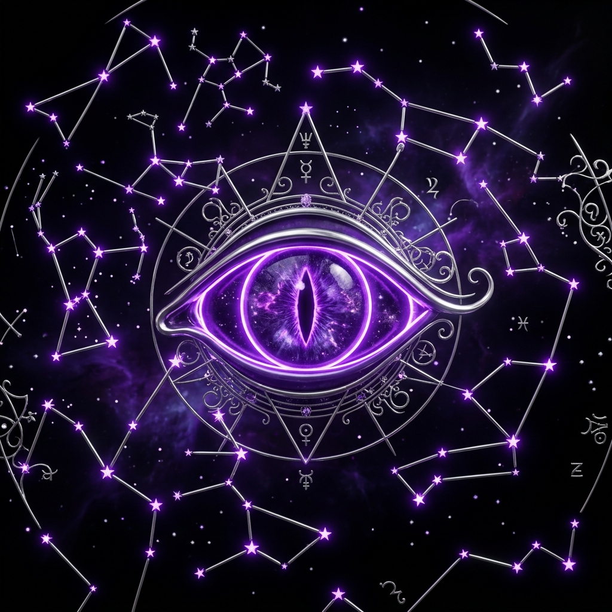

Lector Simbólico
Escribe una palabra que resuene contigo: una emoción, una búsqueda, una inquietud. El oráculo responderá con una lectura arquetipal Los arquetipos son patrones universales del inconsciente colectivo (Jung). No predicen: revelan estructuras de significado que la humanidad ha compartido a lo largo de milenios. basada en la sabiduría simbólica universal.

Explora estos 30 caminos simbólicos o escribe tu propia palabra:
Emociones
Búsquedas Interiores
Caminos de Transformación
Misterios
30 lecturas arquetipales disponibles · también puedes escribir tu propia palabra